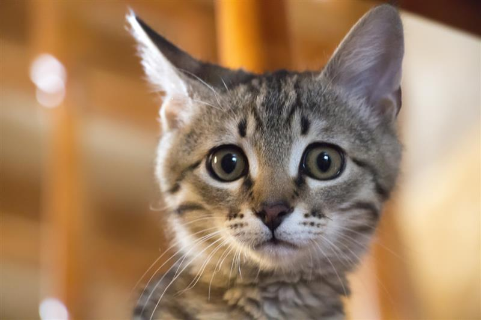
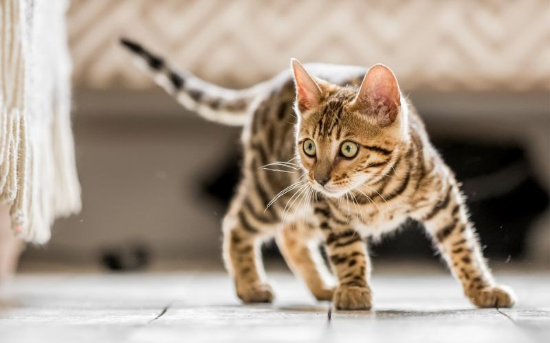
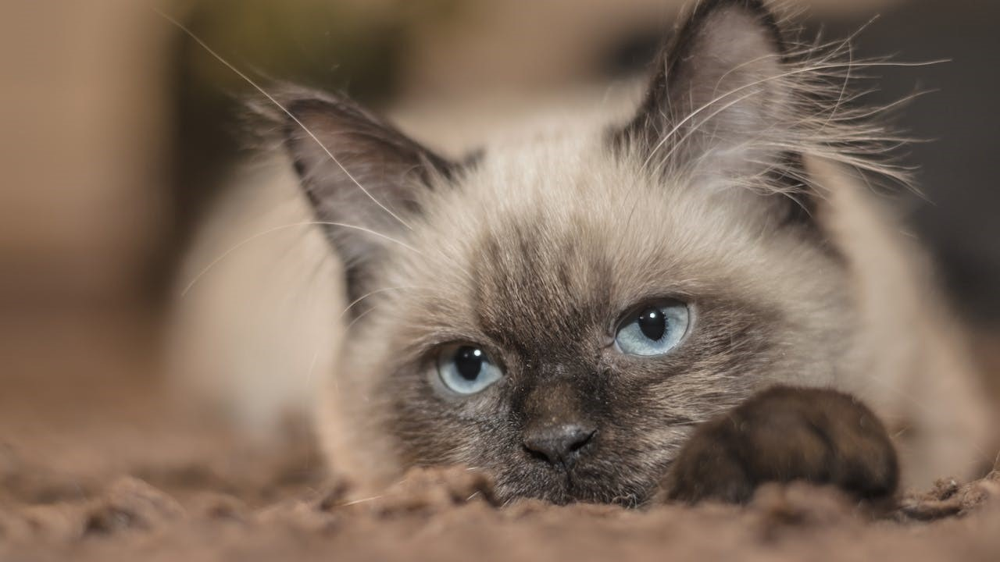
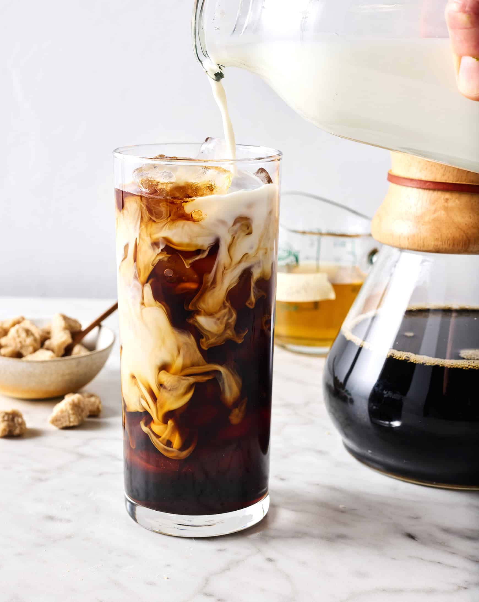
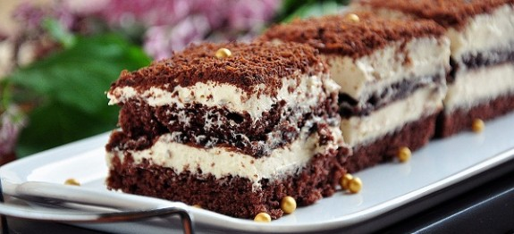

A galéria falain található alkotások nemcsak a cicák csodálatos világát, hanem a kávézó hangulatát is tükrözik. Művészeink a legkülönbözőbb technikákkal és stílusokkal ábrázolják a macskák és az élénk kávés pillanatok varázsát. Legyen szó festményről, fényképről, vagy digitális műalkotásról, mindegyik egy-egy személyes alkotás, amit a kávé és a macskák iránti szeretet ihletett.